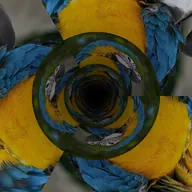

Tunel

Wykłada nieskończony tunel warstwą i przelatuje przez niego. Faza przesuwa teksturę wzdłuż jego długości.
Ustawienia
| Ustawienie | Typ | Zakres | Domyślnie |
|---|---|---|---|
| Obrót X | Kąt | Od -3600° do 3600° | 0° |
| Obrót Y | Kąt | Od -3600° do 3600° | 0° |
| Obrót Z | Kąt | Od -3600° do 3600° | 0° |
| Faza | Liczba | Od -1000 do 1000 | 0 |
| Prędkość | Liczba | Od -20 do 20 | 1 |
| Skręcenie | Liczba | Od -360 do 360 | 0 |
| Powtórzenia | Liczba | Od 1 do 16 | 3 |
| Mgła | Liczba | Od 0 do 1 | 0.4 |
| Kolor mgły | Kolor | – | #000000 |
| Pozycja | Punkt (X, Y) | Od -5000 px do 5000 px | 0 px, 0 px |
| Skala | Liczba | Od 0.05 do 10 | 1 |